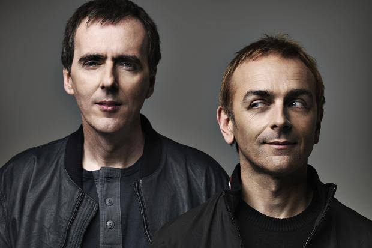

Underworld: Back from underneath the radar
{kind=link}

You could be forgiven for thinking that Underworld had taken an extended holiday over the past few years. While the duo of Karl Hyde and Rick Smith have spent more than two decades together and released enough seminal albums and club anthems to cement their place as one of dance music’s most unforgettable acts, after they wrapped up touring for One Hundred Days Off they took a step back, ‘underneath the radar’ if you will. But according to the group’s charismatic vocalist Karl, they were never tempted to call it quits: they were merely looking to explore other forms of expressing themselves beyond the usual treadmill of putting an album out and touring on the back of it.
“We never considered ending things for the band,” he says. “It was actually the last time we were downunder doing the Big Day Out (in early 2003) that me and Rick realised that if we were serious about Underworld, we needed to explore new ways of putting material out, and get that sense of excitement, uncertainty and a bit of fear back into our creative lives.” So explore they did, which saw them turning their attention to the blossoming possibilities of the internet: they released several ‘download only’ albums exclusively through their site and dabbled in web radio and television, released a number of dancefloor-focused singles as well as limited-edition live recordings straight into the hands of sweaty punters at a smattering of live performances around the world. They even did two soundtracks: one for Anthony Minghella with Breaking and Entering, and earlier this year they collaborated with filmmaker Danny Boyle on his haunting sci-fi flick Sunshine with memorable results.
“We started to explore other ways of getting our material out rather than solely the traditional way,” Says Karl. “We knew we would return to that, but we wanted to be able to expand on it. We felt the traditional route was becoming more uncertain, and kind of boring really. This gave us a certain sense of freedom that we hadn’t felt for a longtime.”
But now they’ve finally come full circle with the release of their new album, Oblivion With Bells. And it’s been a longtime coming: the pair started working on it all the way back in 2003 when they were in Australia, touring on the back of 100 Days Off. “It was actually in a hotel in Sydney where we actually made this decision that we wanted to find other ways of working.” They began building up a body of work which eventually grew to around 180 pieces, of which they drew from in dribs and drabs for their download releases and soundtrack work. “But all the time we were earmarking tracks that were going to be developed for a physical album. And the shape of the album was changing right up until the very last minute; there were tracks that were definitely gonna be there and then got pulled in the eleventh hour, while there other pieces that we wouldn’t have dreamed of putting on there got included in the end.”
The end result will both be familiar for Underworld fans, as well as a little surprising. There are elements that are very upfront, particularly the strong melodies of the opening track and first single Crocodile. But what the listener ultimately takes away from Oblivion With Bells is something that’s very haunting as well as quite moody at times, and it’s an experience that sticks with you long after you finish listening. Holding The Moth deceptively builds from a stark musical arrangement (and Karl’s trademark stream-of-consciousness vocals) into something that’s a lot more busy and engrossing, while the haunting strings of To Heal could have been taken straight from the soundtrack of Sunshine. And the closing track Best Mamgu Ever leaves you with shivers down your spine as the album fades to black.
Was this what Underworld was aiming for with Oblivion With Bells? “You know, it wasn’t,” Karl laughs, his ears pricking up with the mention of the word ‘moody’. “It’s funny that, a few people have commented on that and it’s interesting because it was written during a time when we were very happy and positive, and you’d think that would come across as joyousness and bells ringing. But it did turn out to be quite deep,” he says.
“There could have been more tunes in there that were more ‘up’ and anthemic, but it just didn’t feel right. And when it came to putting it together, this was the one that Rick felt was our strongest record. And when I stood back from it, I said to myself, ‘wow, I never thought I’d make that record!’”
It wouldn’t be stretching it to label Underworld as part of the ‘old guard’ of dance, and as any avid listener would understand, dance music is something that is always evolving at the speed of light. Were they ever worried as to how they were going to stake their claim in such an environment? According to Karl, it was never a matter of cutting themselves off from the prolific amount of music that was getting released around them. “Oh, we listen,” he reassures. He particularly references the new wave of German club music on the minimal/tech side that’s been dominating global clubs recently, throwing around names like Villalobos and the Cocoon record label. “We were reminded of our love of German electronic music when we were kids, and I think we just rediscovered that. There were familiar sounds in there that had the effect of firing us up again. It’s great when you hear music that kind of gives you a kick up the ass and kind of says, ‘we’re coming,’ what are you going to do about it? How are you going to respond?”
That’s not to say that their legacy is under threat. The impact they’ve had on their fans will never be forgotten, and a track like Born Slippy still obviously holds such an emotional resonance for so many people. For proof, look no further than German DJ Paul van Dyk’s performance at the Global Gathering festival in the UK earlier this year when he dropped it into the mix just briefly. When the familiar chords rang out, they were greeted with an instant and massive roar of appreciation from the crowd. Hearing that story recounted, Karl lets out a chuckle.
“That’s extraordinary, and I feel very blessed to be part of something that means a lot to people, and I think Rick would say exactly the same. When we were kids, we had our favourite bands that had written anthems, and those songs are probably still ticking over in our consciousness to this day. People who had done things that had resonated with us and went deep. You’d never even dream that you’d be part of something that would do the same thing for people,” he says. “For that to happen to us, that’s beyond a dream really. To write something that goes deep and stands the test of time, and whatever happens after that, you’ve still got that legacy which isn’t going away.”
Oblivion With Bells by Underworld is out now through PIAS/Liberator, and who knows when we’ll see them in Australia next?